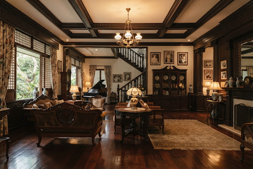

Museum & Park
Quezon Memorial Shrine
A monumental tribute to President Manuel L. Quezon, preserved through immersive storytelling and augmented reality.
Open AR Experience open_in_newDigital Collection
Discover a curated selection of heritage landmarks, preserved heirlooms, and immersive AR experiences from the Quezon collection.
Now viewing
A monumental tribute to President Manuel L. Quezon, preserved through immersive storytelling and augmented reality.
A monumental tribute to President Manuel L. Quezon, preserved through immersive storytelling and augmented reality.
Open AR Experience open_in_new
Step into the elegance of historic vehicles and discover the stories behind each preserved ride.
Open AR Experience open_in_new
Explore the domestic life and craftsmanship of a heritage residence with rich historical context.
Open AR Experience open_in_new
A modernist home design study that reflects the cultural transitions of the era.
Open AR Experience open_in_new